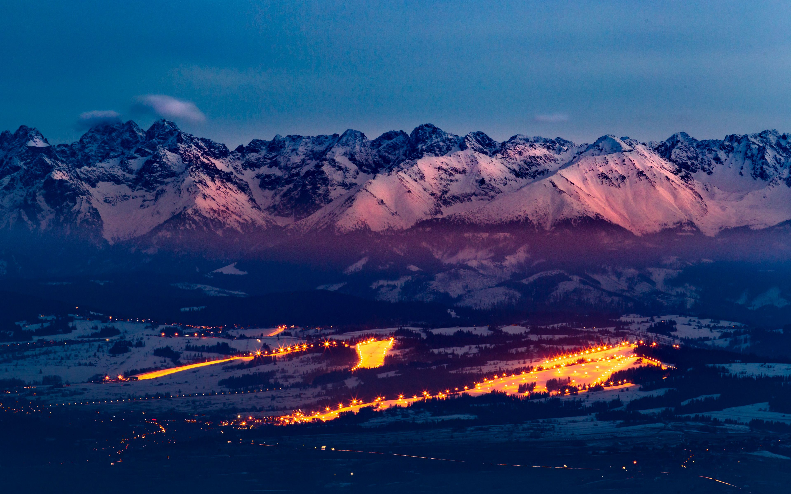
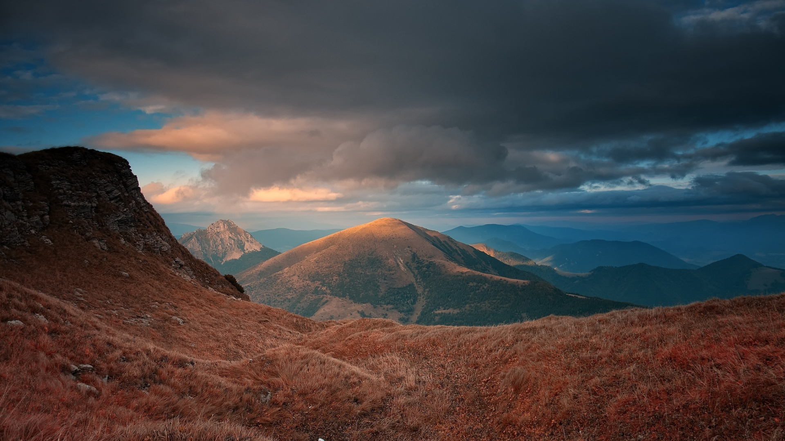

Як дивитись
Кожне фото - це привід пригальмувати й згадати відчуття на маршруті.
- Ніч - тиша, тільки зірки та вогні долини.
- Осінь - різкі контрасти й тепле світло.
- Зима - чистота снігу та чіткі лінії хребтів.

Нічні шлейфи автівок у долині та холодне світло снігу.

Осінній хребет у теплих кольорах і хмари, що біжать у вітрі.

Сніг поглинає звук, залишаючи тільки кроки на насті.

Ранок із чистою лінією горизонту - ідеальний старт дня.
Порада
Завантажуйте фото офлайн і показуйте друзям у дорозі - так легше планувати спільну пригоду.